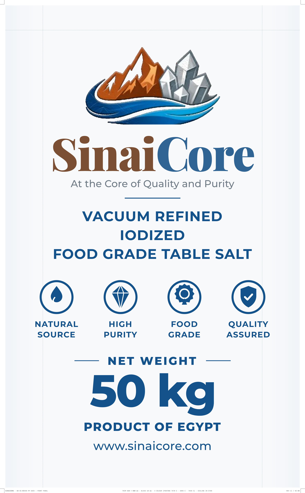
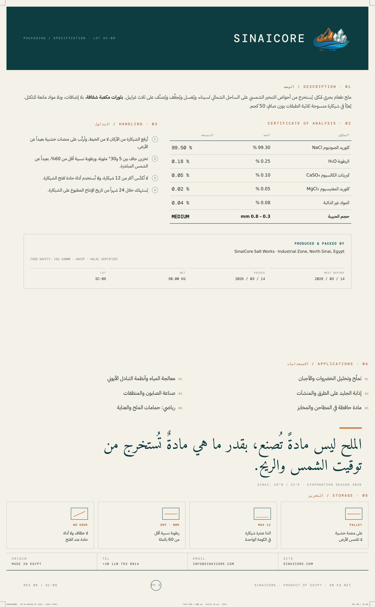
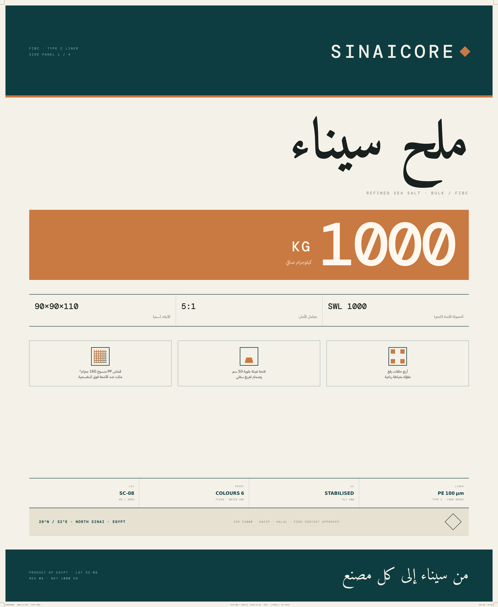

BAG ARTWORK / REV 08 / PRIVATE PREVIEW



#0d3d41./textures/sack-weave.ktx2 تُستخدم لـ bump/roughness فقط، وليست لوناً.خامة مقترحة: roughness 0.85 · metalness 0 · bump 0.05 · clearcoat 0.
المصدر القابل للتعديل: artwork/*.html — التعديل ثم npm run artwork يعيد التوليد.